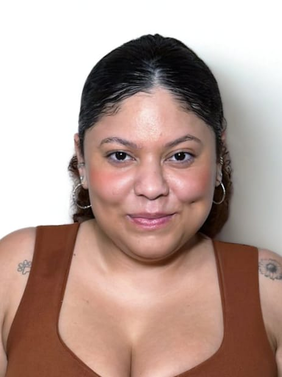
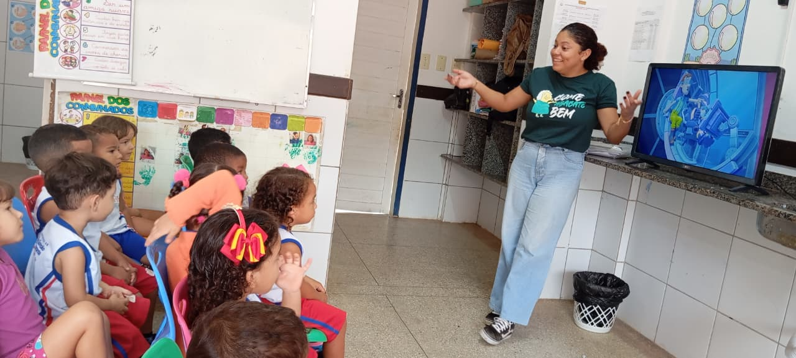
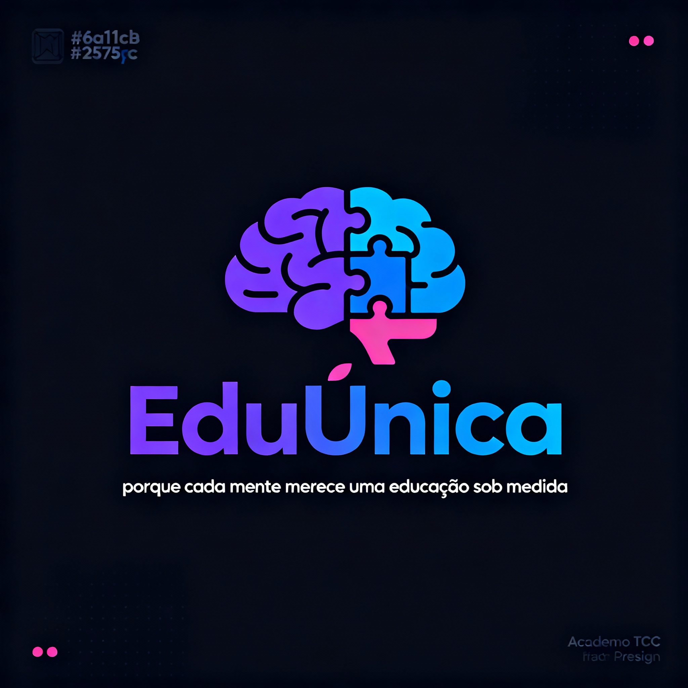

Sobre a Criadora
Conheça a história por trás do EduÚnica
Minha Jornada
Erica Lima dos Santos, 29 anos, natural de São Gonçalo do Amarante - Rio Grande do Norte.
Formada pelo IFRN em Técnico em Informática em 2017, e atualmente cursando Pedagogia pela UNIFAEL.
Minha trajetória sempre esteve voltada para a educação e inclusão, unindo minha formação técnica com minha paixão por ensinar.


Experiências Profissionais
Rede Municipal de São Gonçalo do Amarante
Atuei como auxiliar de sala na educação infantil, cuidando e auxiliando crianças atípicas.
Rede Municipal de Natal
Trabalhei como auxiliar de alunos atípicos, incentivando e promovendo o desenvolvimento dos estudantes.
SENAC - Nível Médio
Estagiei como auxiliar, ajudando alunos atípicos e identificando a necessidade de mais recursos educacionais.
O Nascimento do EduÚnica
Mediante a dificuldade de ter recursos adequados para auxiliar não só alunos, mas também educadores e famílias, desenvolvi o EduÚnica.
Com a invaluável ajuda da professora Gabrielly Cortez, minha orientadora de TI do ensino médio técnico do SENAC, transformei uma necessidade real em uma solução prática.
O projeto nasceu da observação direta das lacunas no sistema educacional e da vontade de fazer a diferença na vida de pessoas neurodivergentes.
